02. Computer-aided Design
Menu
2D design
Use Inkscape to design the 2D model
My homework - Project Model
 Get PDF here
Get svg here
Get PDF here
Get svg here
{kind=link}

How to use the Inkscape
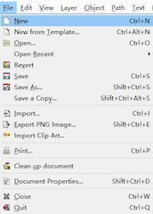
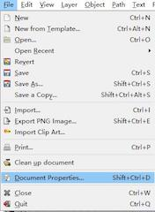
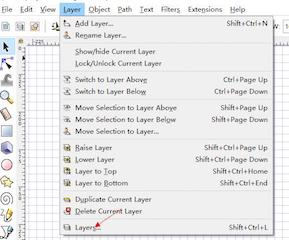
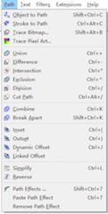
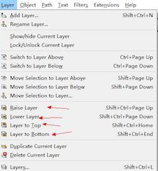
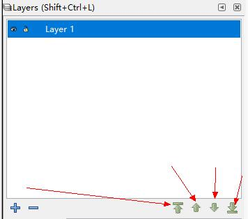
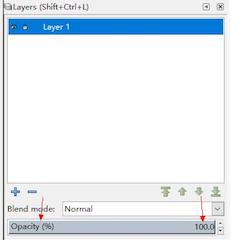
a light
(I am planing to draw a 2D version of my project - a light)
1. Using the tool - circle to draw a circle and put it into the layer 1
2. repeat the step1 and create different circle , set different radium - and put it into different layer
3. upward the layer of the light and downward the layer of the module
( the module is the black one, the light bulb is the one drawing by using two circle and cut the different part
- use the tool differ)
4. Draw the main control computer inside and finish my design.
3D design
Use the fusion360 to design youe project
My project:
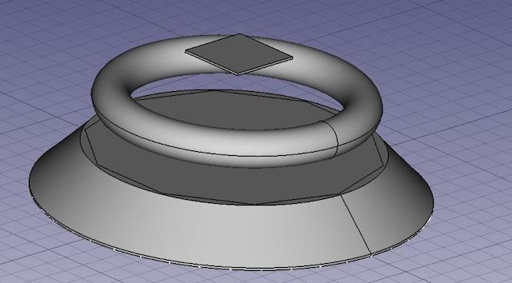
I try many software this week:123D, Fusion360, AutoCAD, Soildwork, FreeCAD.
And I used the FreeCAD to design my project (You have seen it just now.)
But, to be honest, I fount it really hard to use the FreeCAD while designing my project.
It took me nearly a day finding the sources to learn how to use the FreeCAD and get familiar with it.
And I fount it really easy to use the Fusion360 later (while doing the week3 homework -
design a press-fit preject with parametic).
So later I use the Fusion360 to design my project. - And I really recommend this software.
Get my homework here
1. Download a Fusion360 and install it ( you can search it in Google )
2. Launch the Fusion360 and sign in your account.
3. Create a New profile and save it into the cloud.
4. Start to design your project:
1. Create a new component.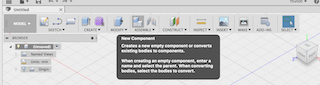
2. Start a sketch.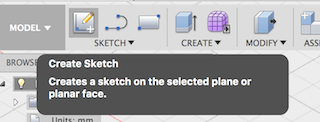
3. Use tools to design a 2D format of your project.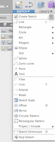
4. Pad/Extrude your design: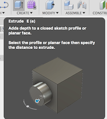
5. Modify your 3D project: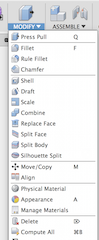
6. You can also optimize your design by using other tools:
*1Construct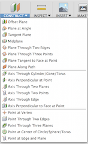
*2Assemble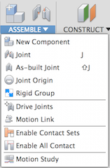
Actually, Coredraw is also a very useful tool to draw a vector image.
And also, Fusion360 can draw a vector image.
Contact me
e-mail: yexh00@icloud.com.